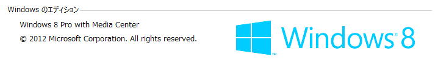

| TOP | weblog | TIPS | Works | リンク |
| 2013-02-22 WindowsのSMBについての問題 復職先の部署が決まらないまま１カ月以上、千葉の社宅で待機しています。 行く先不明のストレスたまりまくりであります。 とりあえず、最低３月中旬までは復職先は決まらないので来週、大阪に一旦帰ることに事にします。 さて自宅のテレビは２００８年に購入した東芝 REGZA 52Z3500 であります。 REGZAリンク機能で、Ethernet LAN経由でWindowsXP,Vistaの共有フォルダに番組を録画/再生できるナイスな機能が SMBのバージョンは、WindowsXP、VistaがSMB1.0、Widows7が2.0、Windows８が2.2らしい。 今まではVistaでRAID5ケース２個使ってたんですけど、やっぱりRAID5って不安です。 OSのRAID1とRAIDケース（ディスク４本）からそれぞれ１本、故障時のバックアップにまわすことにしました。 で、Windows8をインストールしたのですけど、まあ、予想はしていましたがREGZAリンクが機能しません、共有フォルダを見つけてくれません。 LanmanServerのSMB2を無効にするレジストリ値を追加してみましたがダメです。 というかWindows8同士のネットドライブ接続が不安定になります、共有設定のプロパティと関係ありそうです。 この辺は理解の及ばないところなので、素直にあきらめることにしました。 一時的にXPを立ち上げて昔の録画を直付けUSBのHDDに「ムーブ」しました。のべ１８時間。 もう一台、僕のメイン趣味「ハリウッド映画」、主に「中学3年生男子映画」鑑賞。 マシンは「Xtreamer SideWinder」。 こいつもREGZAリンクの再生と同じで、SMBで共有フォルダの中のメジャーなメディアファイルをネット経由でHDMIで再生してくれる便利なやつ。 同様にSMB２には対応しておらず再生不可。 ですが（おそらく）OSがLinuxベースの用でsambaクライアント機能も持っていて、WORKGROUPに参加できるので再生は問題なしです。 テレビの方はdlnaもちょこっとだけ機能があります。 でもdlnaの実装が中途半端というかよくわからなくて、Windows8にMedia Centerをインストールしないとdlnaサーバーになれないのです。 無料期間中にプロダクトキーゲットしておいてよかった。 たまにYouTubeのHDをテレビで見てます、MP4しか再生できないけどね。  大阪で静養しているときに購入したREGZA Z3ではメディアプレイヤーのレンダラ機能が有効でしたけど、対して便利だとは感じませんでいた。 結局、保有している動画がDVD ISOが殆どなのでdlnaって我が家では活躍してません。 |